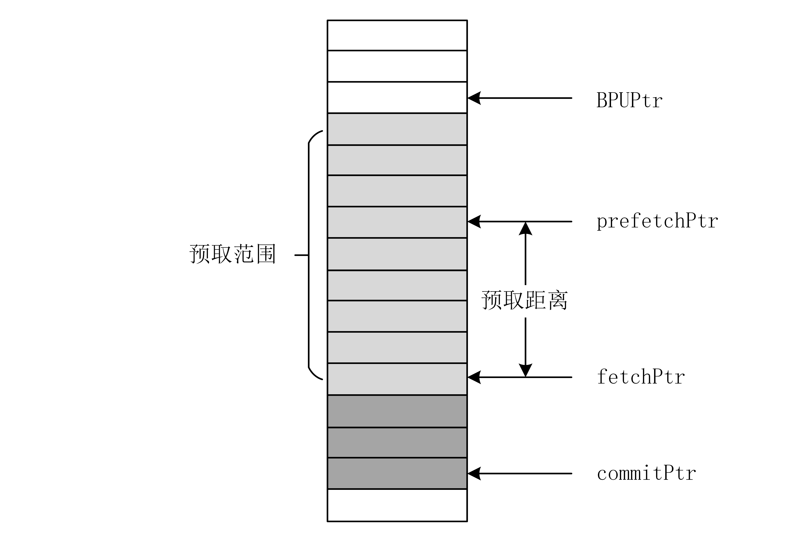
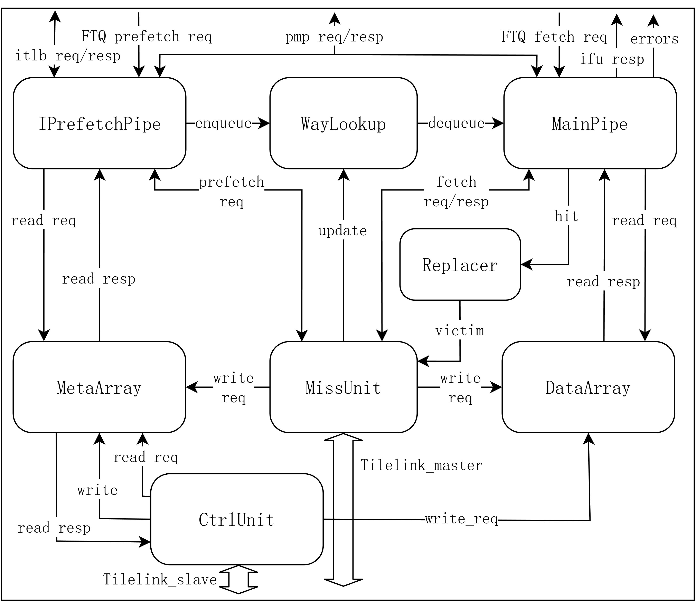
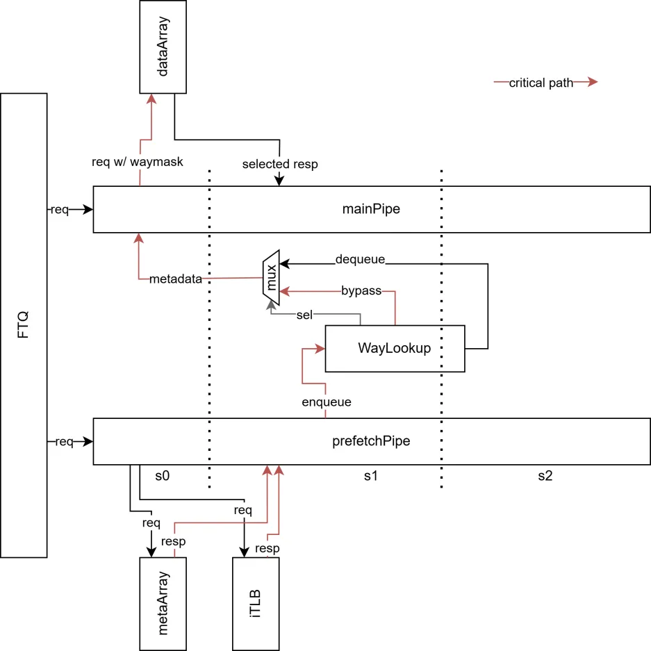
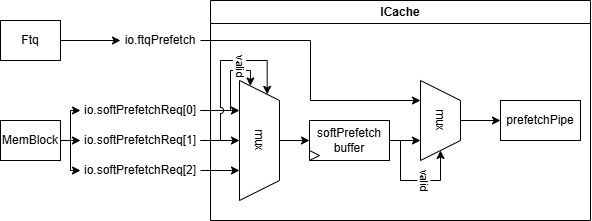
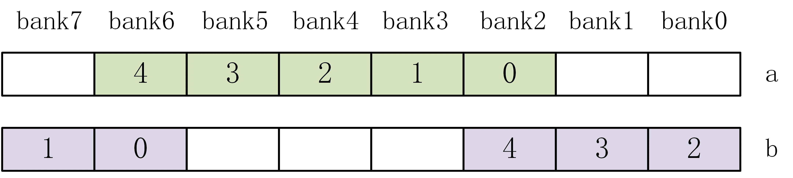
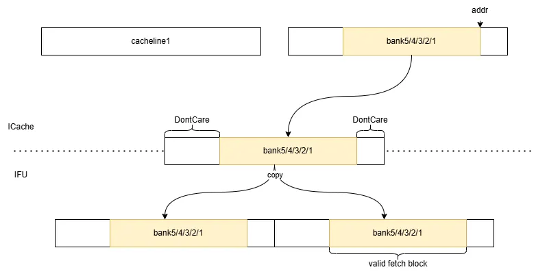
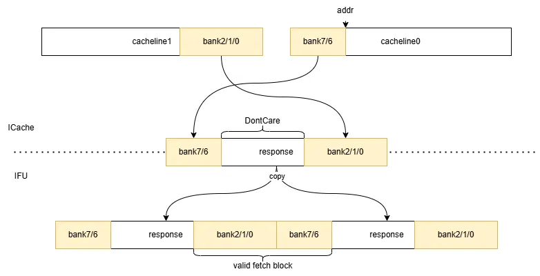

XiangShan ICache 設計ドキュメント
- バージョン: V2R2
- ステータス: OK
- 日付: 2025/03/07
- コミット: 4b2c87ba1d7965f6f2b0a396be707a6e2f6fb345
用語説明
| 略語 | 正式名称 | 説明 |
|---|---|---|
| ICache/I$ | Instruction Cache | L1命令キャッシュ |
| DCache/D$ | Data Cache | L1データキャッシュ |
| L2 Cache/L2$ | Level Two Cache | L2キャッシュ |
| IFU | Instruction Fetch Unit | 命令フェッチユニット |
| ITLB | Instruction Translation Lookaside Buffer | アドレス変換ルックアサイドバッファ |
| PMP | Physical Memory Protection | 物理メモリ保護モジュール |
| PMA | Physical Memory Attribute | 物理メモリアトリビュートモジュール（PMPの一部） |
| BEU | Bus Error Unit | バスエラーユニット |
| FDIP | Fetch-directed Instruction Prefetch | フェッチ指向命令プリフェッチ |
| MSHR | Miss Status Holding Register | ミスステータス保持レジスタ |
| a/(g)pf | Access / (Guest) Page Fault | アクセス/（ゲスト）ページフォールト |
| v/(g)paddr | Virtual / (Guest) Physical Address | 仮想/（ゲスト）物理アドレス |
| PBMT | Page-Based Memory Types | ページベースメモリタイプ、特権マニュアルSvpbmt拡張を参照 |
サブモジュールリスト
| サブモジュール | 説明 |
|---|---|
| MainPipe | メインパイプライン |
| IPrefetchPipe | プリフェッチパイプライン |
| WayLookup | メタデータバッファキュー |
| MetaArray | メタデータSRAM |
| DataArray | データSRAM |
| MissUnit | ミス処理ユニット |
| Replacer | 置換戦略ユニット |
| CtrlUnit | 制御ユニット、現在はエラーチェック/エラー注入機能の制御にのみ使用 |
設計仕様
- キャッシュ命令データ
- ミス時にtilelinkバスを介してL2にデータを要求
- ソフトウェアによるL1 I/Dキャッシュの一貫性維持（
fence.i） - キャッシュラインをまたぐ（プリ）フェッチ要求をサポート
- フラッシュ（bpu redirect、backend redirect、
fence.i）をサポート - プリフェッチ要求をサポート
- ハードウェアプリフェッチはFDIPプリフェッチアルゴリズム
- ソフトウェアプリフェッチはZicbop拡張
prefetch.i命令 - 設定可能な置換アルゴリズムをサポート
- 設定可能なミスステータスレジスタ数をサポート
- アドレス変換エラー、物理メモリ保護エラーのチェックをサポート
- エラーチェック＆エラー回復＆エラー注入をサポート3
- デフォルトではパリティコードを採用
- L2からの再取得によるエラー回復
- ソフトウェアはMMIO空間にアクセス可能なエラー注入制御レジスタを介して制御
- DataArrayはバンク分割ストレージをサポートし、細かいストレージ粒度で低消費電力を実現
パラメータリスト
| パラメータ | デフォルト値 | 説明 | 要件 |
|---|---|---|---|
| nSets | 256 | SRAMセット数 | 2のべき乗 |
| nWays | 4 | SRAMウェイ数 | |
| nFetchMshr | 4 | フェッチMSHRの数 | |
| nPrefetchMshr | 10 | プリフェッチMSHRの数 | |
| nWayLookupSize | 32 | WayLookupの深さ、同時にプリフェッチの最大距離を制限するためにバックプレッシャーをかけることができます | |
| DataCodeUnit | 64 | チェックユニットサイズ（ビット単位）、64ビットごとに1ビットのチェックビットに対応 | |
| ICacheDataBanks | 8 | キャッシュラインのバンク分割数 | |
| ICacheDataSRAMWidth | 66 | DataArrayの基本SRAMの幅 | 各バンクのデータとコードの幅の合計より大きい |
機能概要
FTQにはBPUが生成した予測ブロックが格納されており、fetchPtrはフェッチ予測ブロックを指し、prefetchPtrはプリフェッチ予測ブロックを指します。リセット時にはprefetchPtrとfetchPtrは同じになり、フェッチ要求が正常に送信されるたびにfetchPtr++、プリフェッチ要求が正常に送信されるたびにprefetchPtr++となります。詳細についてはFTQ設計ドキュメントを参照してください。

ICacheの構造は下図の通りです。MainPipeとIPrefetchPipeの2つのパイプラインがあり、MainPipeはFTQからのフェッチ要求を受け取り、IPrefetchPipeはFTQ/MemBlockからのハードウェア/ソフトウェアプリフェッチ要求を受け取ります。プリフェッチ要求に対して、IPrefetchはMetaArrayを検索し、メタデータ（どのウェイでヒットしたか、ECCチェックコード、例外が発生したかなど）をWayLookupに格納します。この要求がミスした場合、MissUnitに送信してプリフェッチを行います。フェッチ要求に対して、MainPipeはまずWayLookupからヒット情報を読み取ります。WayLookupに利用可能な情報がない場合、MainPipeはIPrefetchPipeが情報をWayLookupに書き込むまでブロックされます。この方式はMetaArrayとDataArrayのアクセスを分離し、一度にDataArrayの1ウェイのみにアクセスすることで低消費電力を実現しますが、1サイクルのリダイレクト遅延が発生します。

MissUnitはMainPipeからのフェッチ要求とIPrefetchPipeからのプリフェッチ要求を処理し、MSHRを介して管理します。すべてのMSHRは面積を削減するためにデータレジスタのセットを共有します。
Replacerは置換器で、デフォルトではPLRU置換戦略を採用し、MainPipeからのヒット更新を受け取り、MissUnitに置換対象のwaymaskを提供します。
MetaArrayは奇数バンクと偶数バンクに分かれており、キャッシュラインをまたぐ2ラインアクセスをサポートします。
DataArrayのキャッシュラインはデフォルトで8つのバンクに分割して格納され、各バンクに格納される有効データは64ビットです。また、64ビットごとに1ビットのチェックビットが必要です。65ビット幅のSRAMは性能が良くないため、256*66ビットのSRAMを基本ユニットとして選択し、合計32個のこのような基本ユニットがあります。1回のアクセスには34バイトの命令データが必要で、毎回5つのバンクにアクセスする必要があります（\(8\times5>34\)）。開始アドレスに基づいて選択します。
機能詳細
（プリ）フェッチ要求
FTQはそれぞれ（プリ）フェッチ要求を（プリ）フェッチパイプラインに送信して処理します。前述のように、IPrefetchがMetaArrayとITLBを検索し、メタデータ（どのウェイでヒットしたか、ECCチェックコード、例外が発生したかなど）をIPrefetchPipeのs1パイプラインステージでWayLookupに格納し、MainPipeのs0パイプラインステージで読み取れるようにします。
電源投入時のリセット解除/リダイレクト時、WayLookupが空で、FTQのprefetchPtr、fetchPtrが同じ位置にリセットされるため、MainPipeのs0パイプラインステージはIPrefetchPipeのs1パイプラインステージの書き込みを待つためにブロックされ、これにより1サイクルの追加リダイレクト遅延が発生します。しかし、BPUがFTQに予測ブロックを埋め込み、MainPipe/IFUがさまざまな理由（例：ミス、IBuffer満杯）でブロックされるにつれて、IPrefetchPipeはMainPipeの前で動作するようになり（prefetchPtr > fetchPtr）、WayLookupにも十分なメタデータが存在するようになります。このとき、MainPipeのs0ステージとIPrefetchPipeのs0ステージの動作は並行して行われます。

詳細なフェッチプロセスについては、MainPipeサブモジュールドキュメント、IPrefetchPipeサブモジュールドキュメント、WayLookupサブモジュールドキュメントを参照してください。
ハードウェアプリフェッチとソフトウェアプリフェッチ
V2R2以降、ICacheは2つのソースからプリフェッチ要求を受け取る可能性があります。
- Ftqからのハードウェアプリフェッチ要求、FDIPアルゴリズムに基づく。
- MemblockのLoadUintからのソフトウェアプリフェッチ要求、これは本質的にZicbop拡張のprefetch.i命令であり、RISC-V CMOマニュアルを参照してください。
しかし、PrefetchPipeはサイクルごとに1つのプリフェッチ要求しか処理できないため、調停が必要です。ICacheのトップレベルはソフトウェアプリフェッチ要求をキャッシュし、Ftqからのハードウェアプリフェッチ要求と2つの中から1つを選択してPrefetchPipeに送信します。ソフトウェアプリフェッチ要求の優先度はハードウェアプリフェッチ要求よりも高くなっています。
論理的には、各LoadUnitがソフトウェアプリフェッチ要求を発行する可能性があるため、サイクルごとに最大でLoadUnitの数（現在のデフォルトパラメータはLduCnt=3）のソフトウェアプリフェッチ要求が発生する可能性があります。しかし、実装コストと性能上の利点を考慮して、ICacheはサイクルごとに最大1つしか受け付けて処理せず、余分なものは破棄されます。ポートインデックスが最も小さいものが優先されます。さらに、PrefetchPipeがブロックされ、ICache内にすでにソフトウェアプリフェッチ要求がキャッシュされている場合、元のソフトウェアプリフェッチ要求は上書きされます。

PrefetchPipeに送信された後、ソフトウェアプリフェッチ要求の処理はハードウェアプリフェッチ要求の処理とほぼ同じですが、以下の点が異なります。 - ソフトウェアプリフェッチ要求は制御フローに影響を与えません。つまり、MainPipe（およびその後のIfu、IBufferなどの段階）には送信されず、以下の処理のみを行います。1) ミスまたは例外かどうかを判断する。2) ミスで例外がない場合、MissUnitに送信してプリフェッチを行い、SRAMにリフィルする。
PrefetchPipeの詳細については、サブモジュールのドキュメントを参照してください。
例外の伝達/特殊なケースの処理
ICacheは、フェッチ要求のアドレスの権限チェック（ITLBとPMPを介して）を担当し、L2からの応答を受け取ります。この過程で発生する可能性のある例外は以下の通りです。
| ソース | 例外 | 説明 | 処理 |
|---|---|---|---|
| ITLB | af | 仮想アドレス変換プロセスでアクセスエラーが発生 | フェッチを禁止し、フェッチブロックをafとしてマークし、IFU、IBufferを介してバックエンドに送信して処理 |
| ITLB | gpf | ゲストページフォールト | フェッチを禁止し、フェッチブロックをgpfとしてマークし、IFU、IBufferを介してバックエンドに送信して処理し、有効なgpaddrとisForNonLeafPTEをバックエンドのGPAMemに送信して使用に備える |
| ITLB | pf | ページフォールト | フェッチを禁止し、フェッチブロックをpfとしてマークし、IFU、IBufferを介してバックエンドに送信して処理 |
| backend | af/pf/gpf | ITLBのaf/gpf/pfと同じ | ITLBのaf/gpf/pfと同じ |
| PMP | af | 物理アドレスにアクセス権限がない | ITLBのafと同じ |
| MissUnit | L2 corrupt | L2キャッシュがcorruptを応答 | フェッチブロックをafとしてマークし、IFU、IBufferを介してバックエンドに送信して処理 |
通常のフェッチフローでは、バックエンド例外という項目は存在しないことに注意してください。しかし、XiangShanはハードウェアリソースを節約するために、フロントエンドで渡されるPCは41/50ビット（Sv394 / Sv484）のみであり、jr、jalrなどの命令では、ジャンプ先は64ビットレジスタから取得されます。RISC-V仕様によれば、上位ビットがすべて0またはすべて1でない場合のアドレスは不正であり、例外を発生させる必要があります。このチェックはバックエンドでしか実行できず、バックエンドのリダイレクト信号と一緒にFtqに送信され、さらにフェッチ要求と一緒にICacheに送信されます。これは本質的にITLB例外の一種であるため、説明と処理方法はITLBと同じです。
また、L2キャッシュがtilelinkバスを介してcorruptを応答するのは、L2 ECCエラー（d.corrupt）であるか、バスアドレス空間へのアクセス権限がなくアクセスが拒否された（d.denied）かのいずれかです。tilelinkマニュアルでは、d.deniedをハイにするときは同時にd.corruptもハイにしなければならないと規定されています。そして、どちらの場合もフェッチブロックをアクセスフォールトとしてマークする必要があるため、現在ICacheではこれら2つのケースを区別する必要はありません（つまり、d.deniedに注意する必要はなく、chiselによって自動的に最適化されてverilogで見えなくなる可能性があります）。
これらの例外間には優先順位があります。バックエンド例外 > ITLB例外 > PMP例外 > MissUnit例外。これは自然なことです。 1. バックエンド例外が発生した場合、フロントエンドに送信されるvaddrは不完全で不正であるため、ITLBのアドレス変換プロセスは無意味であり、検出された例外は無効です。 2. ITLB例外が発生した場合、変換されたpaddrは無効であるため、PMPチェックプロセスは無意味であり、検出された例外は無効です。 3. PMP例外が発生した場合、paddrにアクセス権限がないため、（プリ）フェッチ要求は送信されず、したがってMissUnitからの応答は得られません。
バックエンドの3つの例外、ITLBの3つの例外については、バックエンドとITLBの内部で優先順位を付けて選択され、同時に最大1つしかハイにならないことが保証されます。
さらに、いくつかのメカニズムは特殊な状況を引き起こす可能性があり、古いドキュメント/コードでは例外とも呼ばれていましたが、実際にはRISC-Vマニュアルで定義されているexceptionを引き起こすわけではありません。混同を避けるため、今後は特殊な状況と呼びます。
| ソース | 特殊な状況 | 説明 | 処理 |
|---|---|---|---|
| PMP | mmio | 物理アドレスがmmio空間 | フェッチを禁止し、フェッチブロックをmmioとしてマークし、IFUが非投機的フェッチを行う |
| ITLB | pbmt.NC | ページ属性がキャッシュ不可、べき等 | フェッチを禁止し、IFUが投機的フェッチを行う |
| ITLB | pbmt.IO | ページ属性がキャッシュ不可、非べき等 | pmp mmioと同じ |
| MainPipe | ECC error | メインパイプがMetaArray/DataArrayのECCエラーを検出 | ECCの節を参照。旧版ではITLB afと同じ、新版では自動再取得を行う |
DataArrayのバンク分割による低消費電力設計
現在、ICacheの各キャッシュラインは8つのバンク、bank0-7に分かれています。1つのフェッチブロックには34Bの命令データが必要なため、1回のアクセスで連続する5つのバンクにアクセスします。2つのケースがあります。
- これら5つのバンクが単一のキャッシュライン内にある（開始アドレスがbank0-3にある）。開始アドレスがbank2にあると仮定すると、必要なデータはbank2-6にあります。下図a。
- キャッシュラインをまたぐ（開始アドレスがbank4-7にある）。開始アドレスがbank6にあると仮定すると、データはキャッシュライン0のbank6-7、キャッシュライン1のbank0-2にあります。これはリングバッファに似ています。下図b。

SRAMまたはMSHRからキャッシュラインを取得する際、アドレスに基づいてデータを対応するバンクに配置します。
毎回5つのバンクのデータしか必要としないため、ICacheからIFUへのポートは実際には64Bのポートが1つあれば十分です。2つのキャッシュラインの各バンクを選択して連結し、IFUに返します（DataArrayモジュール内で完了）。IFUはこの64Bのデータをコピーして連結し、フェッチブロックの開始アドレスに基づいてフェッチブロックのデータを直接選択できます。ラインをまたがない/またぐ場合の模式図は以下の通りです。


IFU.scalaのコメントも参照してください。
フラッシュ
バックエンド/IFUのリダイレクト、BPUのリダイレクト、fence.i命令の実行時に、状況に応じてICache内のストレージ構造とパイプラインステージをフラッシュする必要があります。フラッシュの対象/アクションは以下の通りです。
- MainPipe、IPrefetchPipeのすべてのパイプラインステージ
- フラッシュ時に
s0/1/2_validをfalse.Bに設定するだけです
- フラッシュ時に
- MetaArrayのvalid
- フラッシュ時に
validをfalse.Bに設定するだけです tag、codeはフラッシュする必要はありません。なぜなら、それらの有効性はvalidによって制御されるからです- DataArrayのデータはフラッシュする必要はありません。なぜなら、それらの有効性はMetaArrayの
validによって制御されるからです
- フラッシュ時に
- WayLookup
- 読み書きポインタをリセット
gpf_entry.validをfalse.Bに設定
- MissUnitのすべてのMSHR
- MSHRがまだバスに要求を発行していない場合、直接無効にします（
valid === false.B） - MSHRがすでにバスに要求を発行している場合、フラッシュ対象として記録します（
flush === true.Bまたはfencei === true.B）。dチャネルがgrant応答を受信したときに無効にし、同時にgrantのデータをMainPipe/PrefetchPipeに返さず、SRAMにも書き込みません - dチャネルがgrant応答を受信すると同時にフラッシュ（
io.flush === true.Bまたはio.fencei === true.B）を受信した場合、MissUnitは同様にSRAMに書き込みませんが、データをMainPipe/PrefetchPipeに返します。これにより、ポートの遅延が応答ロジックに導入されるのを防ぎます。このとき、MainPipe/PrefetchPipeも同時にフラッシュ要求を受信するため、データを破棄します
- MSHRがまだバスに要求を発行していない場合、直接無効にします（
各フラッシュ理由で実行する必要のあるフラッシュ対象：
| フラッシュ理由 | 1 | 2 | 3 | 4 |
|---|---|---|---|---|
| バックエンド/IFUリダイレクト | Y | Y | Y | |
| BPUリダイレクト | Y4 | |||
fence.i |
Y5 | Y | Y5 | Y |
ICacheはフラッシュ中にフェッチ/プリフェッチ要求を受け付けません（io.req.ready === false.B）
ITLBのフラッシュ
ITLBのフラッシュは特殊で、キャッシュされているページテーブルエントリはsfence.vma命令を実行するときにのみフラッシュする必要があります。このフラッシュパスはバックエンドが担当するため、フロントエンド/ICacheは通常ITLBのフラッシュを管理する必要はありません。ただし、1つの例外があります。現在ITLBはリソースを節約するためにgpaddrを保存せず、gpfが発生したときにL2TLBから再取得します。この再取得状態はgpfキャッシュによって制御されます。これにより、ICacheはITLB.resp.excp.gpf_instrを受信したときに、以下の2つの条件のいずれかを保証する必要があります。
- 同じ
ITLB.req.vaddrを再送し、ITLB.resp.missがローになるまで続けます（このときgpf、gpaddrは両方とも有効であり、通常通りバックエンドに送信して処理できます）。ITLBはこのときgpfキャッシュをフラッシュします。 ITLB.flushPipeに信号を送り、ITLBはこの信号を受信したときにgpfキャッシュをフラッシュします。
ITLBのgpfキャッシュがフラッシュされずに、異なるITLB.req.vaddrの要求を受信し、再度gpfが発生すると、コアがハングアップします。
したがって、IPrefetchPipeのs1パイプラインステージをフラッシュするたびに、フラッシュの理由に関係なく、ITLBのgpfキャッシュを同期してフラッシュする必要があります（つまり、ITLB.flushPipeをハイにします）。
ECC
まず、ICacheはデフォルトのパラメータではパリティコードを使用しており、これは1ビットのエラー検出能力しかなく、エラー訂正能力はありません。厳密にはECC（Error Correction Code）とは言えません。しかし、一方で、secdedコードを使用するように設定することもできます。また、コードではエラー検出とエラー訂正に関連する機能（ecc_error、ecc_injectなど）をECCと命名することが多いため、本文書でもコードとの一貫性を保つために、エラー検出、エラー訂正、エラー注入に関連する機能をECCと呼びます。
ICacheはエラー検出、エラー訂正、エラー注入機能をサポートしており、RAS1機能の一部であり、RISC-V RERI2マニュアルを参照できます。CtrlUnitによって制御されます。
エラー検出
MissUnitがMetaArrayとDataArrayにデータをリフィルする際、metaとdataのチェックコードを計算します。前者はmetaと一緒にMeta SRAMに格納され、後者は別のData Code SRAMに格納されます。
フェッチ要求がSRAMを読み取る際、同時にチェックコードも読み出され、MainPipeのs1/s2パイプラインステージでそれぞれmeta/dataのチェックが行われます。ソフトウェアはCSRの対応する位置に特定の値を書き込むことで、この機能を有効/無効にできます。6月から12月のバージョンではカスタムCSR sfetchctlでしたが、その後mmio-mapped CSRに変更されました。詳細はCtrlUnitドキュメントを参照してください。
チェックコードの設計に関して、ICacheが使用するチェックコードはパラメータで制御可能で、デフォルトではパリティコードを使用しています。つまり、チェックコードはデータの排他的論理和です（\(code = \oplus data\)）。チェック時には、チェックコードとデータを一緒に排他的論理和を取ります（\(error = (\oplus data) \oplus code\)）。結果が1であればエラーが発生したと判断し、そうでなければエラーはないと見なします（偶数個のエラーが発生する可能性がありますが、ここでは検出できません）。
#4044以降のバージョンでは、ICacheはエラー注入をサポートしており、これによりICacheはMetaArray/DataArrayに誤ったチェックコードを書き込むことができます。そのため、poisonビットが実装されており、これがハイになると、書き込まれるコードが反転します（\(code = (\oplus data) \oplus poison\)）。
検出できないケースを減らすために、現在dataはDataCodeUnit（デフォルトは64ビット）のユニットに分割され、それぞれパリティチェックが行われます。したがって、64Bのキャッシュラインごとに、合計\(8(data) + 1(meta) = 9\)個のチェックコードが計算されます。
MainPipeのs1/s2パイプラインステージでエラーが検出されると、以下の処理が行われます。
6月から11月のバージョンでは：
- エラー処理：アクセスフォールト例外を発生させ、ソフトウェアが処理します。
- エラー報告：BEUにエラーを報告し、BEUは割り込みを発生させてソフトウェアにエラーを報告します。
- 要求のキャンセル：MetaArrayでエラーが検出された場合、読み出されたptagは信頼できず、したがってヒットかどうかの判断も信頼できません。そのため、ヒットしたかどうかに関わらずL2キャッシュに要求を送信せず、直接例外をIFUに、そしてバックエンドに渡して処理します。
その後のバージョン（#3899以降）では、エラー自動回復メカニズムが実装されたため、以下の処理のみが必要です。
- エラー処理：L2キャッシュから再フェッチします。次節を参照してください。
- エラー報告：上記と同様にBEUにエラーを報告します。
エラーからの自動回復
ICacheはDCacheとは異なり読み取り専用であるため、そのデータはダーティになることはありません。これは、下位のストレージ構造（L2/3キャッシュ、メモリ）から常に正しいデータを再取得できることを意味します。したがって、ICacheはL2キャッシュにミス要求を再発行することで、エラーからの自動回復を実現できます。
再取得機能の実装自体は、既存のミスフェッチパスを再利用するだけで、MainPipe -> MissUnit -> MSHR --tilelink-> L2キャッシュの要求パスをたどります。MissUnitがSRAMにデータをリフィルする際に、自然に新しいチェックコードを計算して保存するため、再取得後は追加の処理なしでエラーのない状態に戻ります。
6月から11月とそれ以降のコードの動作の違いを疑似コードで示します。
- exception = itlb_exception || pmp_exception || ecc_error
+ exception = itlb_exception || pmp_exception
- should_fetch = !hit && !exception
+ should_fetch = (!hit || ecc_error) && !exception
注意すべきは、再取得後にマルチヒット（つまり、同じセット内に複数のウェイのptagが同じになる）を避けるために、再取得前にmetaArrayの対応する位置のvalidをクリアする必要があることです。
- MetaArrayがエラーの場合：metaに保存されているptag自体が間違っている可能性があり、ヒット結果（ワンホットのwaymask）は信頼できません。「対応する位置」とは、そのセットのすべてのウェイを指します。
- DataArrayがエラーの場合：ヒット結果は信頼できます。「対応する位置」とは、そのセットでwaymaskがハイになっているウェイを指します。
エラー注入
RERIマニュアル2の説明によると、ソフトウェアがECC機能をテストし、ハードウェア機能が正常かどうかをより良く判断できるようにするために、エラー注入機能、つまり意図的にECCエラーをトリガーする機能を提供する必要があります。
ICacheのエラー注入機能はCtrlUnitによって制御され、mmio-mapped CSRの対応する位置に特定の値を書き込むことでトリガーされます。詳細はCtrlUnitドキュメントを参照してください。
現在ICacheは以下をサポートしています。
- 特定のpaddrへの注入。要求されたpaddrがヒットしない場合、注入は失敗します。
- MetaArrayまたはDataArrayへの注入。
- ECCチェック機能自体が有効になっていない場合、注入は失敗します。
ソフトウェア注入プロセスの模式図は以下の通りです。
inject_target:
# 何かするかもしれない
ret
test:
la t0, $BASE_ADDR # mmio-mapped CSRのベースアドレスをロード
la t1, inject_target # 注入対象アドレスをロード
jalr ra, 0(t1) # 注入対象にジャンプしてICacheにロードされることを保証
sd t1, 8(t0) # CSRに注入対象アドレスを書き込む
la t2, ($TARGET << 2 | 1 << 1 | 1 << 0) # 注入対象、注入有効、チェック有効を設定
sd t1, 0(t0) # CSRに注入要求を書き込む
loop:
ld t1, 0(t0) # CSRを読み込む
andi t1, t1, (0b11 << (4+1)) # 注入状態を読み込む
beqz t1, loop # 注入が完了していない場合、待機を続ける
addi t1, t1, -1
bnez t1, error # 注入が失敗した場合、エラー処理にジャンプ
jalr ra, 0(t1) # 注入成功、注入対象アドレスにジャンプしてエラーをトリガー
j finish # 終了
error:
# エラー処理
finish:
# 終了
以下のケースをテストするテストケースを作成しました。このリポジトリを参照してください。
- MetaArrayへの正常な注入
- DataArrayへの正常な注入
- 無効なターゲットへの注入
- ECCチェックが有効になっていない状態での注入
- ヒットしないアドレスへの注入
- 読み取り専用のCSRフィールドへの書き込み試行
参考文献
- Glenn Reinman, Brad Calder, and Todd Austin. "Fetch directed instruction prefetching." 32nd Annual ACM/IEEE International Symposium on Microarchitecture (MICRO). 1999.
-
このRAS（Reliability, Availability, and Serviceability）は、RAS（Return Address Stack）とは異なります。 ↩
-
RERI（RAS Error-record Register Interface）、RISC-V RERIマニュアルを参照してください。 ↩↩
-
本ドキュメントでは、エラーチェック＆エラー回復＆エラー注入関連の機能もECCと呼びます。 ECCの節の冒頭の説明を参照してください。 ↩
-
BPUの正確な予測器（BPU s2/s3が結果を出す）が単純な予測器（BPU s0が結果を出す）の予測を上書きする可能性があるため、そのリダイレクト要求はプリフェッチ要求の1～2サイクル後にはICacheに到着するため、以下の処理のみが必要です。
BPU s2 redirect：IPrefetchPipe s0をフラッシュ
BPU s3 redirect：IPrefetchPipe s0/1をフラッシュ
IPrefetchPipeの対応するパイプラインステージの要求がソフトウェアプリフェッチからのものである場合（
isSoftPrefetch === true.B）、フラッシュする必要はありません。IprefetchPipeの対応するパイプラインステージの要求がハードウェアプリフェッチからのものであるが、
ftqIdxがフラッシュ要求と一致しない場合、フラッシュする必要はありません。 ↩ -
fence.iは論理的にはMainPipeとIPrefetchPipeをフラッシュする必要があります（このときパイプラインステージのデータが無効になる可能性があるため）。しかし、実際にはio.fenceiがハイになることは必ずバックエンドのリダイレクトを伴うため、現在の実装ではMainPipeとIPrefetchPipeをフラッシュする必要はありません。 ↩↩